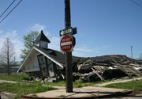

 This research constructs a sociotechnical prototype to develop understanding of cultural change experienced when disasters uproot communities. The objective is to represent, rebuild, and understand local knowledge through a participant action research iterative design process (PAR-IDP), in which people collect and make sense of locative images, narratives, and associated semantic relationships. This involves developing relationships with evacuees through social and computational networks that represent local knowledge, relationships, and processes that interconnect location, identity, memory, and representation.
A new type of Geographic Information System (GIS), the ethnographic locative media collection, uses global positioning system coordinates and maps to connect images, audio, text, and metadata representations of lived local knowledge. Media semantics organize this collection to represent meaningful entities and relationships. The locative media system, integrated with cultural processes, facilitates sensemaking through community involvement to collect multiple and partial perspectives that constitute lived cultural identity. Zoomable, compositional, and hypertextual interactive visualization interfaces are being developed to support people in developing the collection and making sense of it. The prototype focuses on Hurricane Katrina evacuees in and near Houston, and on neighborhoods in New Orleans, taking into account the intersection of local knowledge with race, class and gender.
Launch ZMICSS: The Katrina/Rita Context